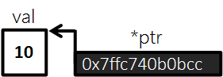
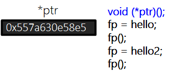
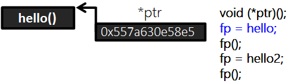
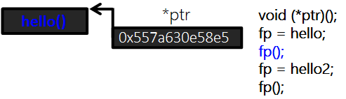
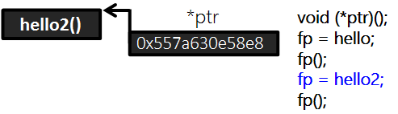
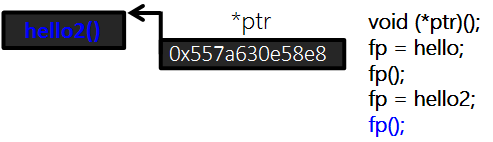

* 개인적인 공부 내용을 기록하는 용도로 작성한 글 이기에 잘못된 내용을 포함하고 있을 수 있습니다.
* 다음 포스팅은 총 3편으로 나누어 정리할 예정입니다.
VOL1 함수 포인터 (Function Pointer) 개요
#1 함수 포인터란?
#2 함수 포인터 사용법
#1 함수 포인터란?
포인터 문법을 이용하면 변수의 주소를 저장할 수 있습니다. 예를들어 아래와 같이 코드를 작성하면 int형 변수 val의 주소가 ptr에 저장됩니다.

int val = 10;
int *ptr = &val;
cout << ptr << endl;
그런데 변수 뿐만 아니라 함수도 주소를 가지고 있습니다. 실제로 함수의 이름을 %p 지정자로 출력해 보면 주소값이 출력됩니다.
#include <iostream>
using namespace std;
void hello()
{
cout << "Hello, World!" << endl;
}
int main(){
/* 함수의 주소 출력 */
cout << "-----print address-----" << endl;
printf("%p\n\n", hello);
return 0;
}함수도 주소를 가지고 있기에, 포인터를 사용할 수 있습니다. 즉, 함수의 주소를 포인터에 저장할 수 있게 되는 것입니다.
함수 포인터 문법을 이용하면 함수의 파라미터로 함수를 보내거나 구조체 안에 함수를 선언하는 등 보다 다채로운 프로그램을 작성할 수 있습니다.
하지만 무엇보다 함수 포인터가 가장 유용하게 쓰이는 상황은 "콜백함수" CallBack Function 의 구현입니다.
콜백함수란 간단하게 요약하면 함수의 동작만을 구현해 놓은 함수입니다. 콜백함수는 게임의 인터페이스 혹은 API 등에서 자주 사용되는데 자세한 내용은 추후에 정리 하도록 하겠습니다.
#2 함수 포인터 사용법
함수 포인터의 기본적인 정의 구조는 아래와 같습니다.
definition : 반환값자료형 (*함수포인터 이름)(매개변수 자료형1, 매개변수 자료형2);
단, 유의할 점은 함수 포인터 선언 시 함수 포인터와 저장될 함수의 반환값 자료형, 매개변수 자료형과 개수가 일치해야 합니다.
여기서 반환값과 매개변수가 없는 함수 포인터를 선언하고자 한다면 아래처럼 반환값에는 void를 매개변수 자료형은 비워서 작성해 주면 됩니다.
void (*ptr)()
#include <iostream>
using namespace std;
void hello()
{
cout << "Hello, World!" << endl;
}
void hello2()
{
cout << "Hello, World!!\n" << endl;
}
int main(){
/* 반환값과 매개변수가 없는 함수 포인터 */
cout << "-----print void(*fp)() -----" << endl;
void (*fp)();
fp = hello;
fp();
fp = hello2;
fp();
return 0;
}-----print void(*fp)() -----
Hello, World!
Hello, World!!

void(*ptr)() - 함수 포인터 선언

fp = hello - hello() 함수의 주소를 포인터에 저장

fp() - 함수 포인터를 이용해 hello() 함수를 호출

fp = hello2 - hello2() 함수의 주소를 포인터에 저장

fp() - 함수 포인터를 이용해 hello2() 함수를 호출
반환값과 매개변수가 있는 함수 포인터도 사용방법은 다르지 않습니다.
아래는 함수 포인터에 add 함수와 mul 함수의 주소를 저장해 출력시킨 예제입니다.
#include <iostream>
using namespace std;
int add(int x, int y)
{
return x + y;
}
int mul(int x, int y)
{
return x * y;
}
int main(){
/* 반환값과 매개변수가 있는 함수 포인터 */
cout << "-----print int(*fp2)(int,int)-----" << endl;
int (*fp2)(int, int); // return value : int , parameter : int int
fp2 = add;
cout << fp2(10, 20) << endl;
fp2 = mul;
cout << fp2(10, 20) << endl;
return 0;
}-----print int(*fp2)(int,int)-----
30
200